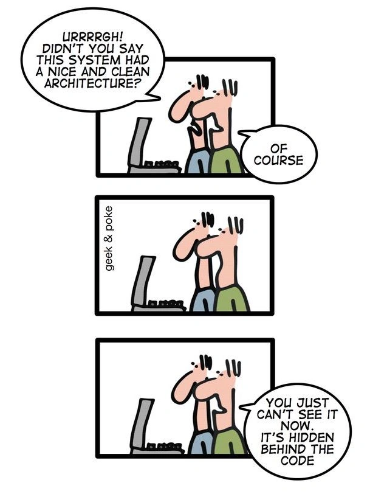

[1] FALSE[1] TRUEAfter this module:
Naming conventions — assigning names to variables
Code formatting — placement of braces, use of white space characters etc.

A syntactically valid name:
Consists of:
._Begins with a letter or the period (.), if . should not followed by a number
Cannot be one of the reserved words: if, else, repeat, while, function, for, in, next, break, TRUE, FALSE, NULL, Inf, NaN, NA, NA_integer_, NA_real_, NA_complex_, NA_character_
Also cannot be: c, q, t, C, D, I as they are reserved function names.
Variable names that are legal are not necessarily a good style and they may be dangerous ☠️:
[1] FALSE[1] TRUE[1] 1[1] 4do not do this!
unless you are a politician 🕴…
Avoid T and F as variable names.
Also, there is a number of variable names that are traditionally used to name particular variables:
usr — userpwd — passwordx, y, z — vectorsw — weightsf, g — functionsn — number of rowsp — number of columnsi, j, k — indexesdf — data framecnt — counterM, N, W — matricestmp — temporary variablesSometimes these are domain-specific:
p, q — allele frequencies in genetics,N, k — number of trials and number of successes in stats
Try to avoid using these for other variables to avoid possible confusion.
Goal: Improve readability
1. Consistent indentation/whitespace
Goal: Improve readability
2. Consistent braces and linewidth
People use different notation styles throughout their code:
snake_notation_looks_like_thiscamelNotationLooksLikeThisperiod.notation.looks.like.thisBut many also use…
LousyNotation_looks.likeThisTry to be consistent and stick to one of them. Bear in mind period.notation is used by S3 classes to create generic functions, e.g. plot.my.object. A good-enough reason to avoid it?
It is also important to maintain code readability by having your variable names:
genotypes vs. fsjht45jkhsdf4weight vs. phenotype.weight.measuredThere are built-in variable names:
LETTERS: the 26 upper-case letters of the Roman alphabetletters: the 26 lower-case letters of the Roman alphabetmonth.abb: the three-letter abbreviations for the English month namesmonth.name: the English names for the months of the yearpi: the ratio of the circumference of a circle to its diameterVariable names beginning with period are hidden: .my_secret_variable 👻 will not be shown but can be accessed
[1] "F" "T"but with a bit of effort you can see them:
[1] ".main" ".QuartoInlineRender" ".Random.seed"
[4] ".the_hidden_answer" "F" "T"